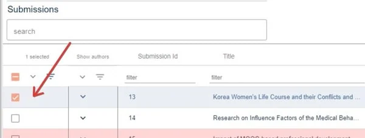
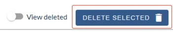
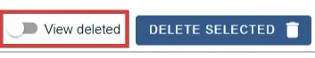
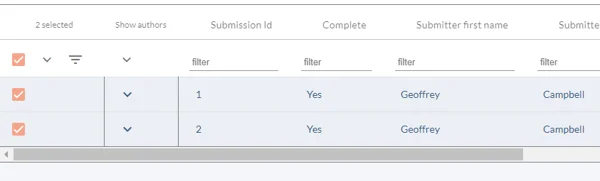
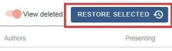
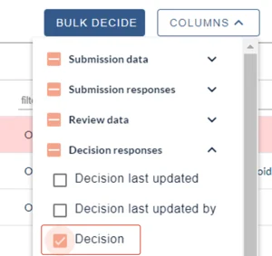
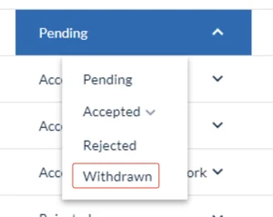
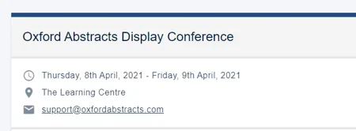

Deleting, restoring or withdrawing a submission
For event organisersNot an organiser?
An account or event administrator can delete or withdraw any unwanted submissions.#
Go to Event dashboard → Abstract Management → Submissions → Table
Skip to:
Deleting a submission
In the Submissions table, select the submissions you wish to delete by ticking the checkbox(es) on the left of each submission ID

Once selected, click on the Delete Selected button in the top right hand corner of the table.

The deleted submissions can be viewed by clicking on View deleted

The Deleted Submissions table will display all submissions which have been deleted.

Restoring deleted submissions
To restore a deleted submission, in the Deleted Submissions table, select the submissions you wish to restore by ticking the checkbox on the left of each submission ID and click Restore Selected

The restored submissions will now be restored to the main submission table.
Withdrawing a submission
To withdraw a submission, go to Event dashboard → Decisions →
Ensure the Decision column is visible (in the Decisions responses section_.

Navigate to the Decision column in the table. Click on the dropdown menu in the relevant row and select Withdrawn.
NB: Withdrawing a submission isn't the same as deleting, as it will still remain in the submission and review tables.

Common questions#
How do I withdraw or delete a submission as an administrator?#
To withdraw (as an administrator), see Recording a decision (Accepting/ rejecting/ withdrawing a submission). Alternatively, if you wish to delete a submission, see Deleting/ restoring or withdrawing a submission.
If you are a submitter, contact the event administrator. You will see the email in the relevant event on your dashboard.

Did this page solve it?
Thanks — this helps us fix it.
Didn't solve it? Ask our support team
No question is too small, and there's no charge for asking. Raise a ticket and someone who knows the software will pick it up.